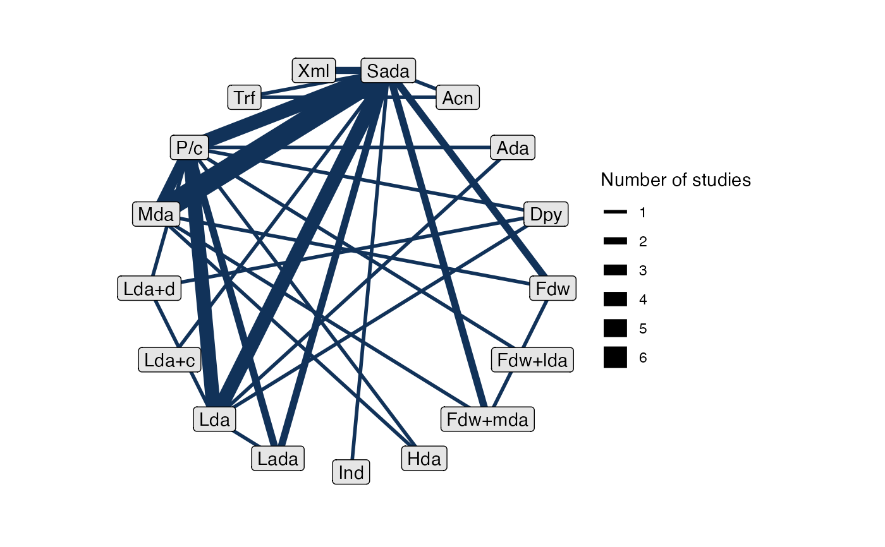

Create a network plot from a nma_data network object.
# S3 method for nma_data plot( x, ..., layout, circular, weight_edges = TRUE, weight_nodes = FALSE, show_trt_class = FALSE )
Arguments
| x | A nma_data object to plot |
|---|---|
| ... | Additional arguments passed to |
| layout | The type of layout to create. Any layout accepted by |
| circular | Whether to use a circular representation. See |
| weight_edges | Weight edges by the number of studies? Default is |
| weight_nodes | Weight nodes by the total sample size? Default is |
| show_trt_class | Colour treatment nodes by class, if |
Value
A ggplot object, as produced by ggraph().
Details
The default is equivalent to layout = "linear" and circular = TRUE, which places the treatment nodes on a circle in the order defined by
the treatment factor variable. An alternative layout which may give good
results for simple networks is "sugiyama", which attempts to minimise the
number of edge crossings.
weight_nodes = TRUE requires that sample sizes have been specified for
any aggregate data in the network, using the sample_size option of
set_agd_*().
Examples
## Stroke prevention in atrial fibrillation # Setting up the network af_net <- set_agd_arm(atrial_fibrillation, study = studyc, trt = abbreviate(trtc, minlength = 3), r = r, n = n, trt_class = trt_class) af_net#> A network with 26 AgD studies (arm-based). #> #> ------------------------------------------------------- AgD studies (arm-based) ---- #> Study Treatments #> ACTIVE-W 2: Sada | Lda+c #> AFASAK 1 3: P/c | Sada | Lda #> AFASAK 2 4: Sada | Fdw | Mda | Fdw+mda #> BAATAF 2: P/c | Lada #> BAFTA 2: Sada | Lda #> CAFA 2: P/c | Sada #> Chinese ATAFS 2: Sada | Lda #> EAFT 3: P/c | Sada | Mda #> ESPS 2 4: P/c | Lda | Dpy | Lda+d #> JAST 2: P/c | Lda #> ... plus 16 more studies #> #> Outcome type: count #> ------------------------------------------------------------------------------------ #> Total number of treatments: 17, in 4 classes #> Total number of studies: 26 #> Reference treatment is: Sada #> Network is connected# Output may be customised using standard ggplot commands # For example, to display the legends below the plot: plot(af_net, weight_nodes = TRUE, show_trt_class = TRUE) + ggplot2::theme(legend.position = "bottom", legend.box = "vertical", legend.margin = ggplot2::margin(0, 0, 0, 0), legend.spacing = ggplot2::unit(0.5, "lines"))# Choosing a different ggraph layout, hiding some legends plot(af_net, weight_nodes = TRUE, show_trt_class = TRUE, layout = "star") + ggplot2::guides(edge_width = "none", size = "none")